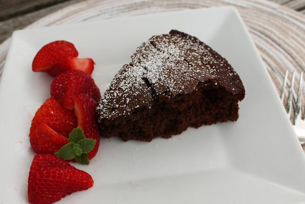

Vegan Chocolate Cake

Description
Rich, medium-dense vegan chocolate cake, perfectly moist. Adapted from Sue's Vegan Chocolate Cake.
Ingredients
- 1 ½ cups allpurpose flour
- 1 cup white sugar
- ¼ cup cocoa powder
- 1 teaspoon baking soda
- ½ teaspoon salt
- ⅓ cup cold vegan buttery spread (such as Earth Balance®)
- ½ cup soy milk, or other milk alternative
- ½ cup brewed coffee
- 1 teaspoon apple cider vinegar, or vinegar of your choice
- 1 teaspoon vanilla extract
Steps
- Preheat the oven to 350 degrees F (175 degrees C). Grease and flour an 8-inch round cake pan.
- Combine four, sugar, cocoa powder, baking soda, and salt in a large bowl, whisking until smooth. Cut in
buttery spread using a pastry cutter or 2 knives until it is the size of small peas and flour mixture is
evenly coated.
- Pour soy milk, coffee, vinegar, and vanilla extract into the bowl. Blend with an electric mixer until
smooth; beat for 2 minutes more. Pour batter into the prepared pan.
- Bake in the preheated oven until a toothpick inserted into the center comes out clean, 35 to 40 minutes.
Cool in the pan for at least 10 minutes before inverting onto a wire rack or serving plate.
Nutrition Facts
Per Serving: 266 calories; protein 3.5g; carbohydrates 45.4g; fat 8.3g; sodium 386.1mg.